1
STRUCTURE
- Understanding structure
- Learning about markup
- Tags and elements
We come across all kinds of documents every day of our lives. Newspapers, insurance forms, shop catalogues… the list goes on.
Many web pages act like electronic versions of these documents. For example, newspapers show the same stories in print as they do on websites; you can apply for insurance over the web; and stores have online catalogs and e-commerce facilities.
In all kinds of documents, structure is very important in helping readers to understand the messages you are trying to convey and to navigate around the document. So, in order to learn how to write web pages, it is very important to understand how to structure documents. In this chapter you will:
- See how HTML describes the structure of a web page
- Learn how tags or elements are added to your document
- Write your first web page
HOW PAGES USE STRUCTURE
Think about the stories you read in a newspaper: for each story, there will be a headline, some text, and possibly some images. If the article is a long piece, there may be subheadings that split the story into separate sections or quotes from those involved. Structure helps readers understand the stories in the newspaper.
The structure is very similar when a news story is viewed online (although it may also feature audio or video). This is illustrated on the right with a copy of a newspaper alongside the corresponding article on its website.
Now think about a very different type of document — an insurance form. Insurance forms often have headings for different sections, and each section contains a list of questions with areas for you to fill in details or checkboxes to tick. Again, the structure is very similar online.
STRUCTURING WORD DOCUMENTS
The use of headings and subheadings in any document often reflects a hierarchy of information. For example, a document might start with a large heading, followed by an introduction or the most important information.
This might be expanded upon under subheadings lower down on the page. When using a word processor to create a document, we separate out the text to give it structure. Each topic might have a new paragraph, and each section can have a heading to describe what it covers.
On the right, you can see a simple document in Microsoft Word. The different styles for the document, such as different levels of heading, are shown in the drop down box. If you regularly use Word, you might have also used the formatting toolbar or palette to do this.
On the previous page you saw how structure was added to a Word document to make it easier to understand. We use structure in the same way when writing web pages.
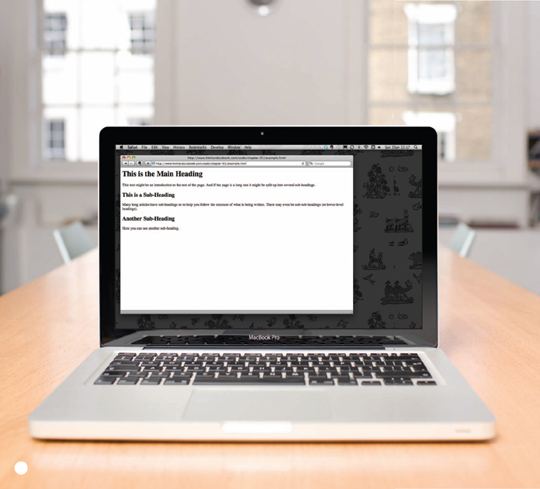
HTML DESCRIBES THE STRUCTURE OF PAGES
In the browser window you can see a web page that features exactly the same content as the Word document you met on the page 18. To describe the structure of a web page, we add code to the words we want to appear on the page.
You can see the HTML code for this page below. Don't worry about what the code means yet. We start to look at it in more detail on the next page. Note that the HTML code is in blue, and the text you see on screen is in black.
<html>
<body>
<h1>This is the Main Heading</h1>
<p>This text might be an introduction to the rest of
the page. And if the page is a long one it might
be split up into several sub-headings.<p>
<h2>This is a Sub-Heading</h2>
<p>Many long articles have sub-headings so to help
you follow the structure of what is being written.
There may even be sub-sub-headings (or lower-level
headings).</p>
<h2>Another Sub-Heading</h2>
<p>Here you can see another sub-heading.</p>
</body>
</html>
The HTML code (in blue) is made up of characters that live inside angled brackets — these are called HTML elements. Elements are usually made up of two tags: an opening tag and a closing tag. (The closing tag has an extra forward slash in it.) Each HTML element tells the browser something about the information that sits between its opening and closing tags.
HTML USES ELEMENTS TO DESCRIBE THE STRUCTURE OF PAGES
Let's look closer at the code from the last page. There are several different elements. Each element has an opening tag and a closing tag.
CODE
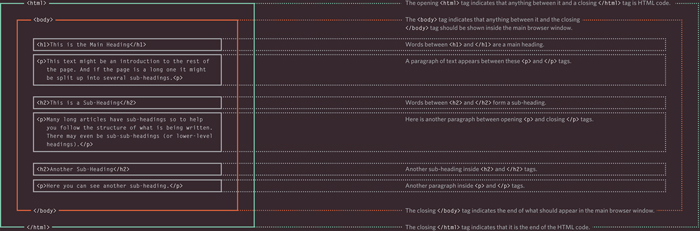
Tags act like containers. They tell you something about the information that lies between their opening and closing tags.
DESCRIPTION
A CLOSER LOOK AT TAGS
The characters in the brackets indicate the tag's purpose.
For example, in the tags above the p stands for paragraph.
The closing tag has a forward slash after the the < symbol.
The terms “tag” and “element” are often used interchangeably.
Strictly speaking, however, an element comprises the opening tag and the closing tag and any content that lies between them.
ATTRIBUTES TELL US MORE ABOUT ELEMENTS
Attributes provide additional information about the contents of an element. They appear on the opening tag of the element and are made up of two parts: a name and a value, separated by an equals sign.
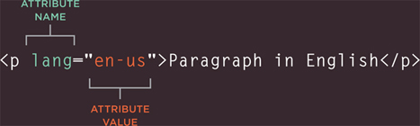
The attribute name indicates what kind of extra information you are supplying about the element's content. It should be written in lowercase.
The value is the information or setting for the attribute. It should be placed in double quotes. Different attributes can have different values.
Here an attribute called lang is used to indicate the language used in this element. The value of this attribute on this page specifies it is in US English.
HTML5 allows you to use uppercase attribute names and omit the quotemarks, but this is not recommended.
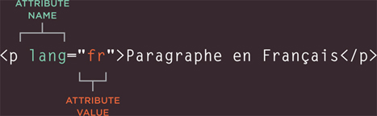
The majority of attributes can only be used on certain elements, although a few attributes (such as lang) can appear on any element.
Most attribute values are either pre-defined or follow a stipulated format. We will look at the permitted values as we introduce each new attribute.
The value of the lang attribute is an abbreviated way of specifying which language is used inside the element that all browsers understand.
BODY, HEAD & TITLE
<body>
You met the <body> element in the first example we created. Everything inside this element is shown inside the main browser window.
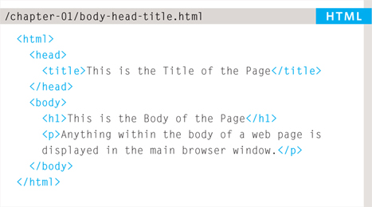
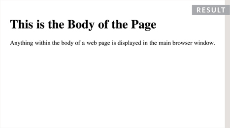
<head>
Before the <body> element you will often see a <head> element. This contains information about the page (rather than information that is shown within the main part of the browser window that is highlighted in blue on the opposite page). You will usually find a <title> element inside the <head> element.
<title>
The contents of the <title> element are either shown in the top of the browser, above where you usually type in the URL of the page you want to visit, or on the tab for that page (if your browser uses tabs to allow you to view multiple pages at the same time).
You may know that HTML stands for HyperText Markup Language. The HyperText part refers to the fact that HTML allows you to create links that allow visitors to move from one page to another quickly and easily. A markup language allows you to annotate text, and these annotations provide additional meaning to the contents of a document. If you think of a web page, we add code around the original text we want to display and the browser then uses the code to display the page correctly. So the tags we add are the markup.
CREATING A WEB PAGE ON A PC
To create your first web page on a PC, start up Notepad. You can find this by going to:
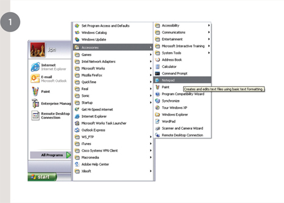
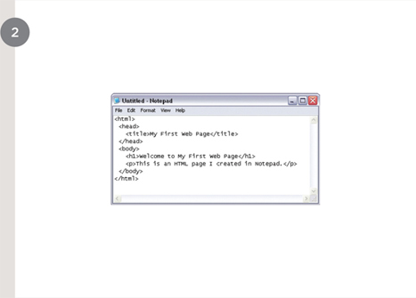
- Start
- All Programs (or Programs)
- Accessories
- Notepad
- Accessories
- All Programs (or Programs)
You might also like to download a free editor called Notepad++ from notepad-plus-plus.org.
Type the code shown on the right.

Go to the File menu and select Save as… You will need to save the file somewhere you can remember. If you like, you could create a folder for any examples that you try out from this book.
Save this file as first-test.html. Make sure that the Save as type drop down has All Files selected.
Start your web browser. Go to the File menu and select Open. Browse to the file that you just created, select it and click on the Open button. The result should look something like the screen shot to the left.
If it doesn't look like this, find the file you just created on your computer and make sure that it has the file extension .html (if it is .txt then you need to go back to Notepad and save the file again, but this time put quote marks around the name “first-test.html”).
CREATING A WEB PAGE ON A MAC
To create your first web page on a Mac, start up TextEdit. This should be in your Applications folder.
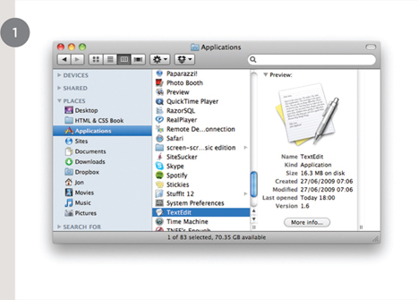
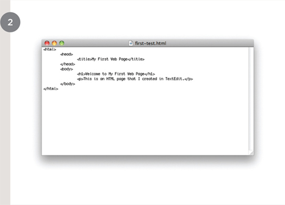
You might also like to download a free text editor for creating web pages called TextWrangler which is available from barebones.com.
Type the code shown on the right.
Now go to the File menu and select Save as… You will need to save the file somewhere you can remember.
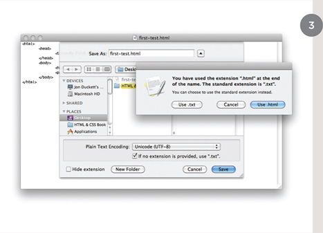
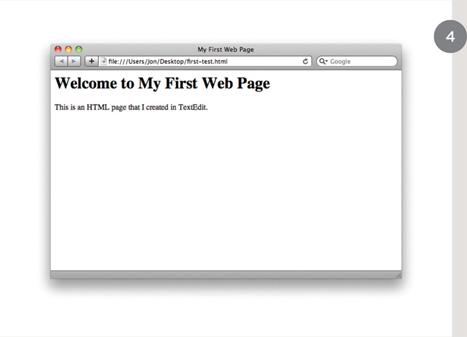
If you like, you could create a folder for any examples that you try out from this book. Save this file as first-test.html. You will probably see a window like the screen shot to the left.
You want to select the Use.html button.
Next, start your web browser, go to the File menu, and select Open. You should browse to the file that you just created, select it and click on the Open button. The result should look like the screen shot to the left.
If it doesn't look like this, you might need to change one of the settings in TextEdit. Go to the TextEdit menu and select Preferences. Then on the preferences for Open and Save, tick the box that says Ignore rich text commands in HTML files. Now try to save the file again.
CODE IN A CONTENT MANAGEMENT SYSTEM
If you are working with a content management system, blogging platform, or e-commerce application, you will probably log into a special administration section of the website to control it. The tools provided in the administration sections of these sites usually allow you to edit parts of the page rather than the entire page, which means you will rarely see the <html>, <head>, or <body> elements.
Looking at the content management system on the opposite page, you have a box that allows you to enter a title for the page, another box for the main article, a way to enter a publication date, and something to indicate which section of the site this page belongs in.
For an e-commerce store, you might have boxes that allow you to enter a title for the product, a description of the product, its price, and the quantity available.
That is because they use a single ‘template’ to control all of the pages for a section of the site. (For example, an e-commerce system might use the same template to show all of their products.) The information you supply is placed into the templates.
The advantage of this approach is that people who do not know how to write web pages can add information to a website and it is also possible to change the presentation of something in the template, and it will automatically update every page that uses that template. If you imagine an e-commerce store with 1,000 items for sale, just altering one template is a lot easier than changing the page for each individual product. In systems like this, when you have a large block of text that you can edit, such as a news article, blog entry or the description of a product in an e-commerce store, you will often see a text editor displayed.
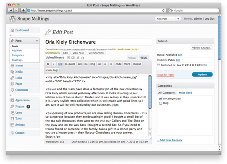
Text editors usually have controls a little like those on your word processor, giving you different options to style text, add links or insert images. Behind the scenes these editors are adding HTML code to your text, just like the code you have seen earlier in this chapter. Many of these editors will have an option that allows you to see (and edit) the code that they produce.
Once you know how to read and edit this code, you can take more control over these sections of your website.
In the example above, you can see that the text editor has a tab for Visual / HTML views of what the user enters. Other systems might have a button (which often shows angle brackets) to indicate how to access the code.
Some content management systems offer tools that also allow you to edit the template files. If you do try to edit template files you need to check the documentation for your CMS as they all differ from each other. You need to be careful when editing template files because if you delete the wrong piece of code or add something in the wrong place the site may stop working entirely.
LOOKING AT HOW OTHER SITES ARE BUILT
When the web was first taking off, one of the most common ways to learn about HTML and discover new tips and techniques was to look at the source code that made up web pages.
These days there are many more books and online tutorials that teach HTML, but you can still look at the code that a web server sends to you. To try this out for yourself, simply go to the sample code for this chapter, at www.htmlandcssbook.com/code/ and click on the link called “View Source.”
Once you have opened this page, you can look for the View menu in your browser, and select the option that says Source or View source. (The title changes depending on what browser you are using.)
You should see a new window appear, and it will contain the source code that was used to create this page.
You can see this result in the photograph on the right. The page you see is the window at the top; the code is below.
At first this code might look complicated but don't be discouraged. By the time you have finished the next chapter of this book, you will be able to understand it.
All of the examples for this book are on the website, and you can use this simple technique on any of the example pages to see how they work.
You can also download all of the code for this book from the same website by clicking on the “Download” link.
SUMMARY STRUCTURE
- HTML pages are text documents
- HTML uses tags (characters that sit inside angled brackets) to give the information they surround special meaning.
- Tags are often referred to as elements.
- Tags usually come in pairs. The opening tag denotes the start of a piece of content; the closing tag denotes the end.
- Opening tags can carry attributes, which tell us more about the content of that element.
- Attributes require a name and a value.
- To learn HTML you need to know what tags are available for you to use, what they do, and where they can go.